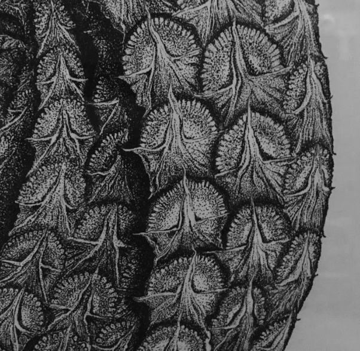
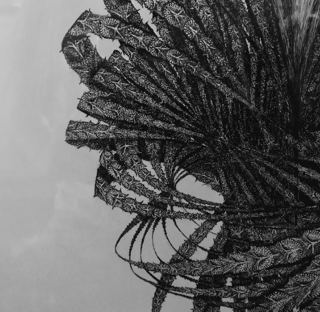
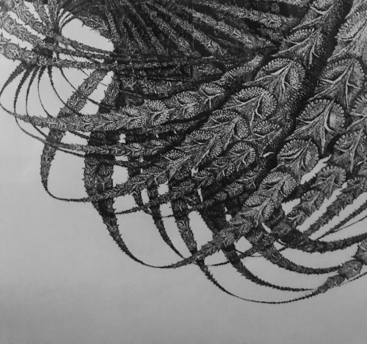

High-res close-ups:
  Hopf Fibration With Pineapple Scales, 2016
22x28 inches, Ink pen on poster board
This piece was inspired by the hopf fibration, visualized as a stereographic projection of the 3-sphere into R3. I loved this shape and how it allows the viewer to "see" in higher dimensions, and coincidentally, it reminded me of a pineapple.
More about the hopf fibration.
Jason Momoa, 2018
Charcoal on paper
This is a drawing I did of Jason Momoa. I was trying to get more practice in charcoals and I was really taken with how dramatic his countenance was.
The Chemist, 2016
Scratchboard, paper, pencil, pen
In 2016, I did a series of drawings of my friends at work in various class subjects. This is my friend Christian in chemistry class.
Cat, 2018
Acrylic and watercolor, 4x4 inches
I painted this dashing fellow on a small index card in 2016, as part of a series of small cards I intended to hang around my dorm room like Polaroids.
Jupiter, 2018
Pen and watercolor, 4x4 inches
This is another of my fake Polaroids, this time of Jupiter.
Lionfish, 2018
Pen and watercolor, 4x4 inches
This "fake Polaroid" was inspired by a trip to one of my favorite places: the zoo.
Cards, 2018
Pen and watercolor, 4x4 inches
This "fake Polaroid" was a simple exercise in copying what I saw in front of me: a couple loose cards.